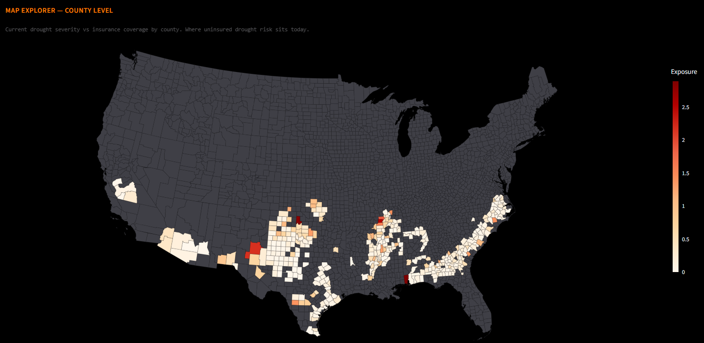

Which U.S. cotton counties are most exposed to drought right now?
The U.S. Drought Exposure Monitor tracks roughly 10 million planted cotton acres against federal crop-insurance coverage and the U.S. Drought Monitor's weekly severity map. With more than half the national cotton crop grown in Texas, the cotton view is weighted heavily toward Plains drought — refreshed every Thursday.

Where U.S. cotton is grown
Cotton is concentrated more heavily in a single state than any other major U.S. row crop. Texas alone grows roughly half of the national crop — the Texas High Plains around Lubbock is the single largest cotton-producing region in the country. The remainder of the U.S. cotton picture is split across the Southeast — Georgia, North Carolina, Alabama, South Carolina — and the Mid-South — Arkansas, Missouri, Mississippi, Tennessee, Louisiana — with smaller acreage in Oklahoma, Kansas, and the Far West.
That Texas concentration is why cotton drought analysis is largely Texas drought analysis. A Texas High Plains drought year can pull the entire U.S. cotton crop down even when conditions elsewhere are favorable. The Monitor shows this directly on the cotton tab: when D2 or higher drought sits over the High Plains, the cotton exposure score for those counties dominates the national watch list.
How drought exposure works for cotton
Federal crop-insurance participation for cotton is strong in Texas — RMA's Multi-Peril Crop Insurance and stacked coverage products see heavy adoption on the High Plains — and more variable in the Southeast and Mid-South. Coverage rates in the dryland cotton counties of the Texas High Plains are very high; cotton is one of the most widely insured row crops in Texas because the drought risk is structurally baked into the local economy. Southeast irrigated cotton coverage is more variable.
One data caveat: USDA NASS sometimes publishes current-year cotton county data later than corn and soybean county data. When that happens, the Monitor's cotton view falls back to a state-level estimate scaled by the county's three-year share of state cotton acreage, then promotes to county actuals when NASS publishes them.
The exposure score uses the same three inputs the rest of the tool does: planted acres from USDA NASS, insured acres from USDA RMA's Summary of Business, and current drought severity from the U.S. Drought Monitor.
Data sources for cotton drought exposure
Every input that drives the cotton exposure score is public, free, and refreshed on a known cadence:
| Source | What it provides | Refresh |
|---|---|---|
| USDA NASS | Planted cotton acres by county, with three-tier waterfall for current-year coverage | Annual + intra-year revisions |
| USDA RMA Summary of Business | Federally insured cotton acres by county and coverage type | Monthly mid-year + crop-year close |
| U.S. Drought Monitor | Current drought severity (D0–D4) by county | Weekly, Thursdays |
| NOAA CPC Seasonal Drought Outlook | 90-day forward outlook — development, persistence, improvement, removal | Monthly |
Frequently asked questions
Which U.S. states grow the most cotton?
Texas grows roughly half the U.S. cotton crop on its own, with the Texas High Plains around Lubbock the single largest production region. The remaining acreage is split between the Southeast — Georgia, North Carolina, Alabama, and South Carolina — and the Mid-South — Arkansas, Missouri, Mississippi, Tennessee, and Louisiana. Smaller acreage shows up in Oklahoma, Kansas, and the Far West.
What is the typical federal crop insurance coverage rate for cotton?
Coverage rates are very high in dryland Texas High Plains cotton counties — cotton is one of the most widely insured row crops in Texas because the local economy is structurally exposed to drought and most producers carry layered coverage. Coverage varies more in the Southeast and Mid-South, where irrigation availability and producer-specific risk preferences shift participation rates.
Why is U.S. cotton drought exposure dominated by Texas?
Texas alone grows roughly half of the national cotton crop. The Texas High Plains is dryland cotton country — irrigation is limited, and rainfall during the growing season drives the yield. When the U.S. Drought Monitor flags D2 or higher severity over the High Plains, the national cotton balance sheet moves with it. Drought elsewhere in the cotton belt can be material, but rarely dominant in the way Texas High Plains drought is.
Where is U.S. cotton most at risk from drought this week?
It changes weekly. The Monitor reorders its cotton watch list every Thursday after the U.S. Drought Monitor publishes. Historically the Texas High Plains, the Texas Rolling Plains, and parts of southwestern Oklahoma draw the most exposure when summer drought develops. The current week's view is on the live tool.